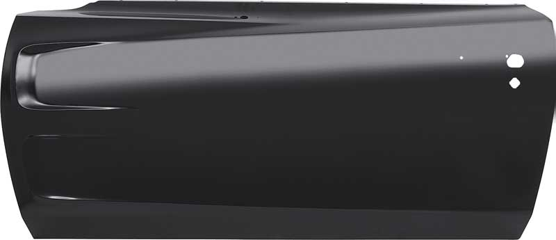

Doors of Dodge Charger 1969

Door Design and Features
-
Body Style: The 1969 Charger was available primarily as a two-door hardtop, though there was also a two-door fastback model.
-
Construction: The doors are made of steel and are designed to be robust to handle the demands of high-performance driving.
They were built with a focus on durability and strength, which was a common trait for muscle cars of that era.
-
Door Handles: The exterior door handles are chrome-plated and have a distinctive, sleek design that complements the car's overall aesthetic.
Inside, the doors feature simple, functional handles and controls.
-
Window Mechanisms: The windows in the 1969 Charger are manual crank-operated for both the front and rear windows.
Power windows were not standard for this model but could be installed as an aftermarket upgrade.